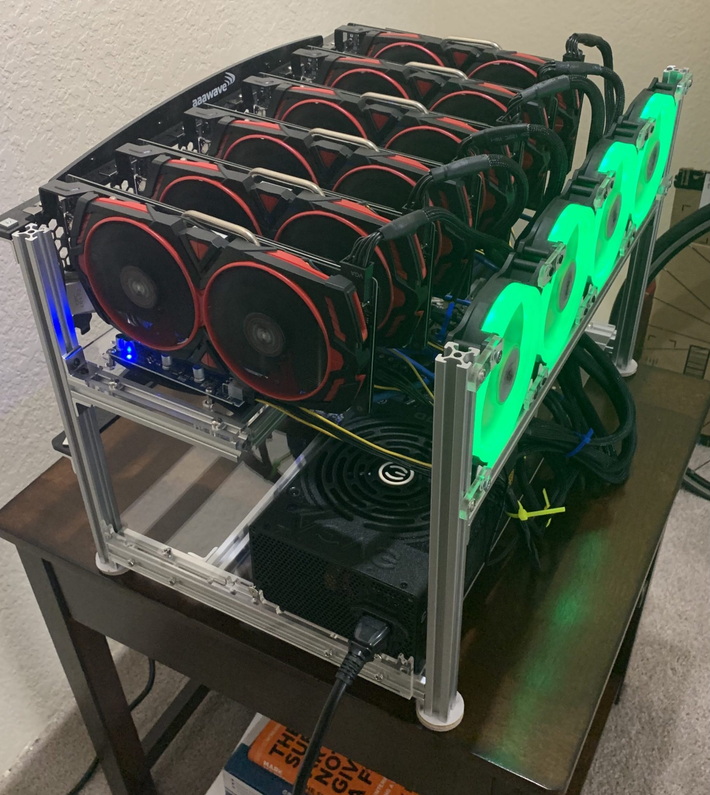
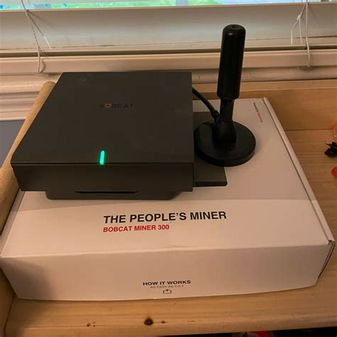
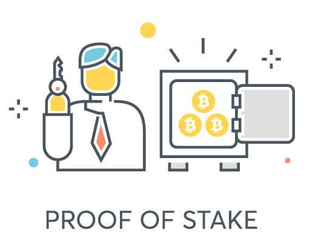

Getting Started With Cryptocurrency Mining

Written by Elisha Ebanks eebanks100
June 30, 2022
Cryptocurrency Mining Overview
For many people whenever they hear cryptocurrency mining, they may image people deep in the dark depths of a cave system picking away at rocks which can then be used as some form of currency. This however, is far from the truth. In a nutshell, crypto mining are computers solving incredibly complicated mathematical puzzles in exchange for the cryptocurrency they are mining for on the blockchain. A blockchain simply refers to all the blocks in a chain and each block consist of transactions.
The mathematical puzzles that computers are handles are these transactions that people make everyday on these blockchains for various cryptocurrencies. These computers, or "miners", are rewarded in crypto by competing to add blocks to the blockchain. The most common cryptocurrency people refer to when mining is Bitcoin but there are other cryptocurrencies out there that can be mined. A few of these cryptocurrencies are Ethereum, Ravencoin, and Helium which can be preferable depending on what hardware you have to mine with, the difficulty to mine said coin, and what digital proof you decide to use.
Below is a brief overview of just a few of the common digital proofs your miners could use to earn crypto as a form of passive income.
Proof-of-Work (PoW)
The first in the list is POW which stands for Proof-of-Work and this is the first digital proof created by Satoshi Nakamoto who is the pseudonymous person credited with coming up with the idea of Bitcoin. Usually done with computer GPUs and ASIC miners, this is the most common proof people usually refer to when talking about cryptocurrency mining. This is still the most reliable and secure method when it comes to handling transactions on the blockchain but this does come with its draw backs. A common critic to PoW is that it is requires a high level of energy in terms of electricity.
Depending on where you live, electricity costs, season, and a number of other factors taking place in the crypto market, stock market, and debt market, people may look to other alternatives for passive income when it comes to mining cryptocurrency. However, that still does not mean assembling a crypto miner utilizing this proof is a bad idea and is still a fun project to work on and learn a few things about what computers in the modern world can do for you. To take a look at how to assemble a miner in this fashion check under the Build a Miner tab or click here.
Proof-of-Coverage (PoC)
A really interesting work algorithm is PoC which stands for Proof-of-Coverage. This one is a personal favorite of mine for the simplicity of assembling it and the energy efficiency of the miners that utilize this proof. A miner that uses this proof is just some form of a hotspot which uses the PoC algorithm verifies that the hotspot is located where they claim. The PoC algorithm is constantly verifying whether or not the wireless network converage that is created is in the location of the actual hotspot. An example of such a miner is the Bobcat 300 which mines the cryptocurrency Helium (HNT) and the set up of these miners are pretty straight forward. Hook up the antenna to the hotspot, connect to a network over WiFi or ethernet, then set up the miner through the Helium app and the miner can be up and running in less than 10 minutes.
It is important to note that PoC is also used as an abbreviation for Proof-of-Capacity which is another proof for people who offer computer memory or disk space which is then used to solve mathematical puzzles. Think PoW but using disk space instead of GPUs or ASICs. Another name for this proof is PoSpace or Proof-of-Storage.
Proof-of-Stake (PoS)
Another common digital proof is PoS which stands for Proof-of-Stake. The biggest advantage PoS has over PoW is the fact that PoS is not so demanding when it comes to energy consumption and there really is no need for all the additional hardware you will need when it comes to assembling a miner using the PoW algorithm. This algorithm distributes rewards based on the number of coins someone is holding in their digital wallet of a particular cryptocurrency. The more of these coins you claim, the bigger chances you will have to be awarded these transaction blocks. In some sense when you purchase some coin that utilizes PoS and simply leave the coins alone in a wallet, over time you can earn additional coins over time based on how much you already have in your wallet. The draw back of PoS when compared to PoW is that it has to sacrifice security in order to reduce power expenditure.
